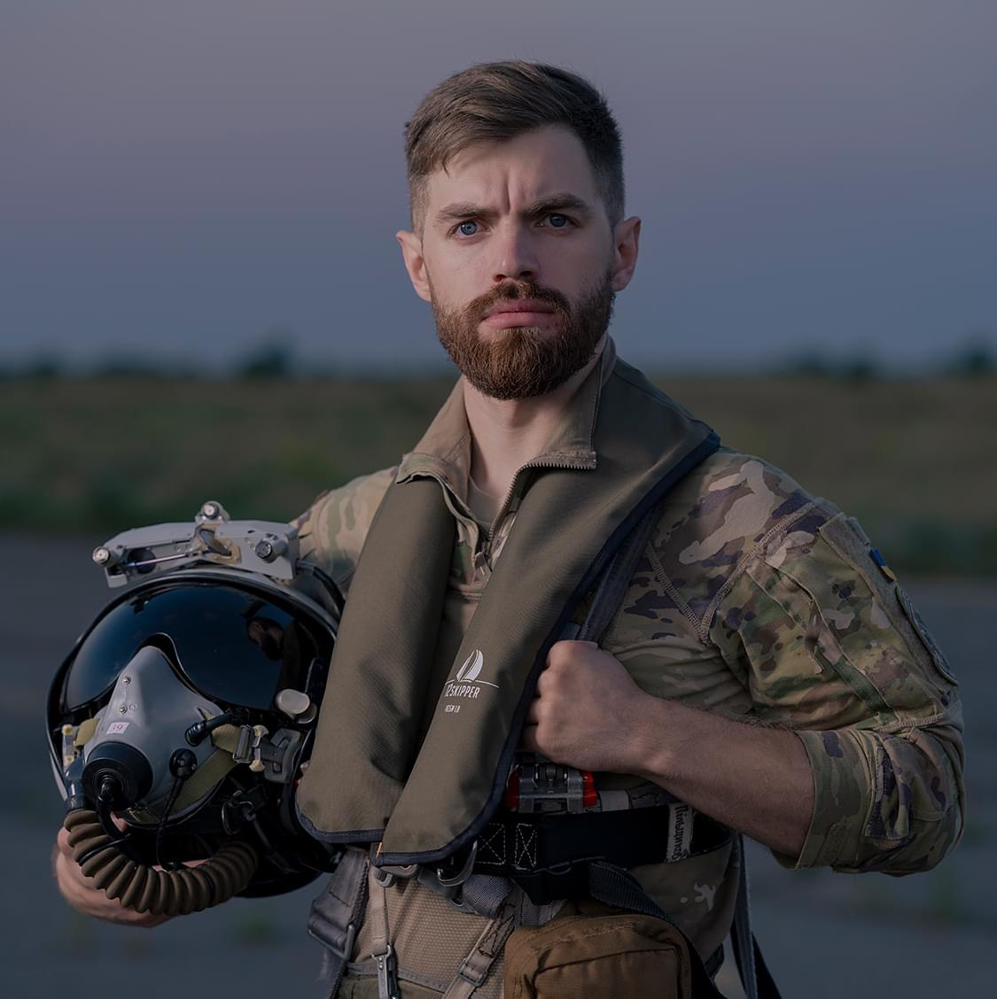

Captain Andrii Pilshchykov
National hero, patriot, defender of Ukrainian skies.

"Captain Andrii 'Juice' Pilshchykov – A Hero of Ukraine"
Timeline of Andrii's life and service:
- February 3, 1993 - Born in Kharkiv, Ukraine, where he would later develop a profound passion for aviation.
- 2008 - Joined the Ukrainian Spotter's Site, fostering a community of aviation enthusiasts and deepening his knowledge of aircraft.
- 2015 - Graduated from the Ivan Kozhedub National Air Force University and officially began his career in the Ukrainian Air Force as a fighter pilot.
- 2019 - Interned with the 144th Fighter Wing of the California Air National Guard, earning the call sign "Juice" due to his preference for non-alcoholic drinks. This period further sharpened his skills as a fighter pilot.
- 2021 - Took a brief hiatus from the Air Force, citing frustrations with systemic challenges and inefficiencies within the organization.
- 2022 - Returned to active duty following the full-scale Russian invasion of Ukraine. He became a symbol of resilience and commitment, flying over 100 combat missions to protect Ukrainian airspace.
- August 25, 2023 - Tragically lost his life in a mid-air collision during a training mission near Sinhury, Zhytomyr Oblast. His passing marked a profound loss for Ukraine and the global aviation community.
- 2024 - Posthumously honored with the title of Hero of Ukraine for his unparalleled bravery, dedication, and contributions to the nation's defense.
"Juice was a young officer with incredible knowledge and talent, embodying the courage and resilience of our nation."
— Volodymyr Zelenskyy, President of Ukraine